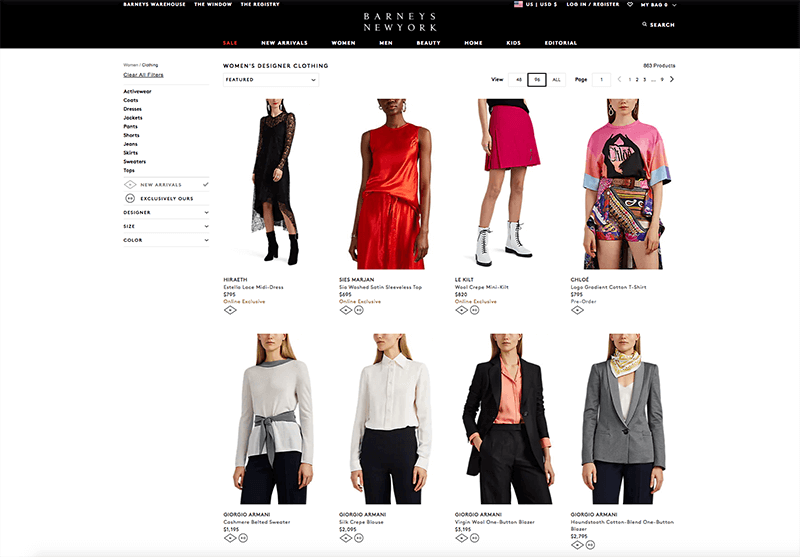
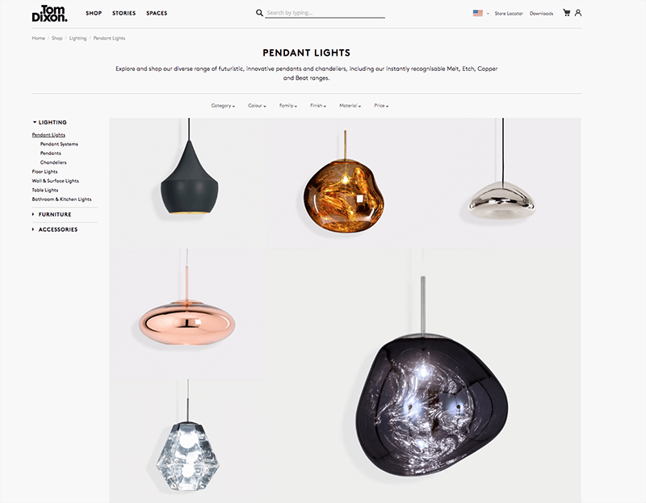

Major retailers and global brands are looking beyond traditional search pathways for something a little more eye catching: visual search.
Google now has it embedded into its camera app. Pinterest, along with clothing and cosmetic retailer, ASOS launched theirs in 2017. Then Microsoft’s search engine Bing joined the fun mid-last year. And just this month, Salesforce, too, rolled out its own. Many retail CEOs and marketers are honing in on visual search to streamline and improve their customer experience.
That all begins with Artificial Intelligence. AI gives search engines the functionality to more fully mimic the human experience and consumers are diving in. Technology presents dynamic new opportunities for brands to enrich the customer’s discovery process. Read on to learn more about this emerging aspect of consumer shopping.
Consumers Want Search To Be As Productive As They Are
We understand that social media engagement increases across the board when images and video are shared. The human brain itself processes visual information faster than text. This helps explains why 75% of consumers find text-based keyword searches inefficient. Mobile consumers are finding that visual search helps them close the gaps in their purchase journey.
Typical searches use text to query results based on things like file name, captions and alt attributes (the text alternative to an image). Visual search takes it a couple steps further, engaging higher level queries with a “thinking” algorithm that filters search results into context. Quite similar to the way humans filter internally.
“In delivering such a simple, seamless experience, AI-powered visual search removes the friction from traditional search-and-shop experiences. No longer do customers have to visit multiple retailers or sites and strike out. They can now find virtually anything, anywhere, even without knowing exactly where to find it,” says Adobe Director of Software Development Brett Butterfield.
A Look At How Visual Search Works
Picture this: Your customer walks into Starbucks. She bypasses the register because she ordered through the mobile app, and heads to the mobile pick-up station. Standing at the barista bar, Lucy’s mom from down the street says hi. She’s wearing an incredible pair of joggers, but can’t remember where she got them. So your customer opens Google Lens, aims her camera at the joggers and within seconds finds the same pair for sale online.
Dubbed by Search Engine Journal as the “world’s personal shopper” visual search is helping retail brands like fashion, home and decor create some of the most sophisticated customer experiences online today.
That’s the idea behind visual search. Search Engine Journal has dubbed visual search as the “world’s personal shopper”. Visual search is actually helping retail brands in fashion, home and decor create some of the most sophisticated customer experiences online today.

Visual Search Key To Online Shopping
Why are retailers especially keen on integrating visual search into their digital marketing strategy? Because it’s what their consumers want.
“As consumers have become more comfortable with images, and technology better at interpreting them, images have become more central in e-commerce. In a PowerReviews survey of US internet users in September 2016, 40% of respondents said they ‘always’ search for visual content, and a further 32% ‘regularly’ search for it,” says Akanksha Pandey, editor of Design & Tech Co.
It’s not just about easing the search process for items consumers know they want; but also helping them find products they might need in addition to what they want. Enter Pinterest’ Lens feature. Described as a “way to discover ideas without having to find the right words to describe them first”, Lens helps consumers find products with just a click of a button. In addition, it predicts what consumers might need based on their query. Since Pinterest rolled out its Lens feature, visual search grew 140% (that’s over just one year).
Visual Search Tips
The image recognition market is slated to grow to $25 billion by 2019, so you’ll want to be sure your marketing and technology teams are considering how visual search can best help your brand.
Since schema (the code you add on the back-end of your web content for SEO) is important to how databases are inputting and sorting visual search results it’s critical that your content is tagged with metadata that is both thoughtful and appropriate.

The face of your brand needs to be on point too. With the average human attention span at just eight seconds, visual content needs to look good. Slyce, a visual search tech company serving brands like Home Depot, Neiman Marcus and Macy’s found that nearly 70% of consumers pay attention to the quality of product images when selecting and purchasing a product. So carefully curated, high quality images are what consumers need to help them identify – and trust – products they want before finalizing their shopping decisions.
And of course, it also helps to integrate with existing platforms that use visual search technology to connect with consumers where they are already shopping and browsing (hi Pinterest).
Your consumer is intelligent, multifaceted and on-the-go, not only with their devices, but also with their decision-making. Prioritizing visual search can better serve their needs and further your goal to make your brand a part of their life.